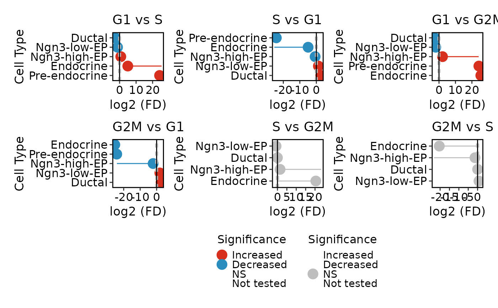
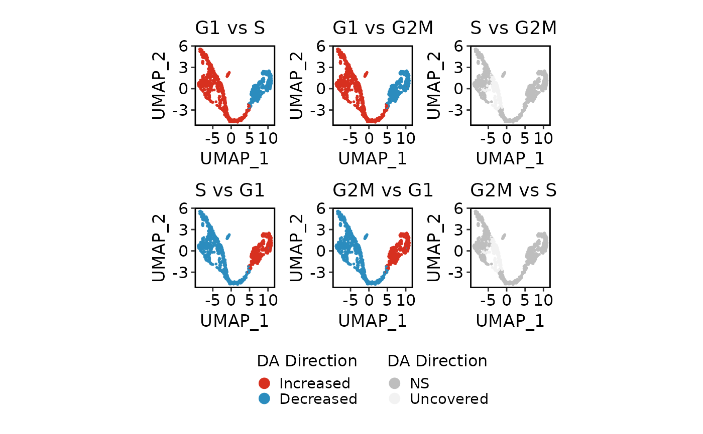

Generate differential-abundance plots based on results from RunProportionTest. Supports both legacy storage and method-layer storage from the multi-method proportion-test workflow.
Usage
ProportionTestPlot(
object,
comparison = NULL,
proportion_method = NULL,
result_level = c("group", "neighborhood"),
plot_type = c("effect", "umap"),
umap_mode = c("discrete", "continuous"),
reduction = "UMAP",
projection_args = list(),
FDR_threshold = 0.05,
log2FD_threshold = log2(1.5),
order_by = c("value", "name"),
palette = "RdBu",
palcolor = NULL,
group_palette = "Chinese",
group_palcolor = NULL,
pt.size = 1,
pt.alpha = 1,
cols.sig = "red",
cols.ns = "grey",
cols.increase = "#d7301f",
cols.decrease = "#2b8cbe",
effect_color_mode = c("directional", "classic"),
nlabel = 5,
features_label = NULL,
label = FALSE,
label.fg = "black",
label.bg = "white",
label.bg.r = 0.1,
label.size = 4,
aspect.ratio = NULL,
xlab = "Cell Type",
ylab = "log2 (FD)",
theme_use = "theme_scop",
theme_args = list(),
legend.position = "bottom",
legend.direction = "vertical",
legend.title = "Significance",
combine = TRUE,
nrow = NULL,
ncol = NULL,
byrow = TRUE,
seed = 11,
verbose = TRUE,
srt = NULL
)Arguments
- object
A Seurat object containing proportion-test results.
- comparison
Which comparison to plot. If
NULL, plots all comparisons.- proportion_method
Optional method to select from
srt@tools[['ProportionTest']][['methods']]. IfNULL, uses the active/most recent method.- result_level
Result level to draw. Use
"group"for group-level results or"neighborhood"for stored Milo neighborhood-level results. A missing requested level is an error. Milo group results are sample-level cell-type proportion tests, distinct from the Milo neighborhood test.- plot_type
Plot type. One of
"effect"or"umap".- umap_mode
UMAP projection mode for
plot_type = "umap"."discrete"maps cells to DA direction categories;"continuous"maps group-levelobs_log2FDor the mean effect of overlapping Milo neighborhoods to cells. Neighborhood directions are based on significant memberships: opposite directions are"Mixed", while cells in no neighborhood are"Uncovered". This is a member-cell projection, not a separate Milo test per cell.- reduction
Reduction name used by UMAP projection.
- projection_args
Additional arguments passed to CellDimPlot (
umap_mode = "discrete") or FeatureDimPlot (umap_mode = "continuous").- FDR_threshold
FDR value cutoff for frequentist methods. Milo neighborhood results use
SpatialFDR. scCODA uses its storedcredibledecision instead.- log2FD_threshold
Absolute value of log2FD cutoff for frequentist methods; not applied to scCODA credibility.
- order_by
Method to order clusters. Options:
"name"(alphabetical),"value"(by log2FD value).- palette
Color palette name for continuous effect coloring.
- palcolor
Custom colors for
palette.- group_palette
Palette for cluster/group coloring.
- group_palcolor
Custom colors for
group_palette.- pt.size
The size of the points.
- pt.alpha
Point transparency.
- cols.sig
Color for significant/credible points and intervals.
- cols.ns
Color for non-significant points and intervals.
- cols.increase
Default color for increased DA groups.
- cols.decrease
Default color for decreased DA groups.
- effect_color_mode
Coloring mode for
plot_type = "effect". Use"directional"(default) for increased/decreased/NS colors, or"classic"for legacy significant/non-significant coloring.- nlabel
Number of labels added when
label = TRUEandfeatures_label = NULL.- features_label
Character vector specifying points to label.
- label
Whether to add labels.
- label.fg
Label foreground color.
- label.bg
Label background color.
- label.bg.r
Label background radius.
- label.size
Label text size.
- aspect.ratio
Aspect ratio of the panel.
- xlab
X-axis label. For
plot_type = "umap", this is forwarded to the projection plot when set.- ylab
Y-axis label. For
plot_type = "umap", this is forwarded to the projection plot when set.- theme_use, theme_args
Theme name or function, plus extra theme arguments.
- legend.position
The position of legends, one of
"none","left","right","bottom","top".- legend.direction
Legend direction:
"horizontal"or"vertical".- legend.title
Title of the legend.
- combine, nrow, ncol, byrow
Combine plots with patchwork.
combine = FALSEreturns a list of ggplots.- seed
Random seed.
- verbose
Whether to print messages.
- srt
Deprecated alias for
object; supply exactly one of the two. It will be removed in scop 1.0.0.
Examples
Restored example output generated on 2026-10-13 from SCOP 53ed7e08f. These historical examples have not been revalidated against the current release. Current usage and arguments are documented above.
data(pancreas_sub)
pancreas_sub <- RunStandardWorkflow(pancreas_sub)
#> ℹ [2026-10-13 16:38:35] Start standard processing workflow...
#> ℹ [2026-10-13 16:38:35] Checking a list of <Seurat>...
#> ! [2026-10-13 16:38:35] Data 1/1 of the `srt_list` is "unknown"
#> ℹ [2026-10-13 16:38:35] Perform `NormalizeData()` with `normalization.method = 'LogNormalize'` on 1/1 of `srt_list`...
#> ℹ [2026-10-13 16:38:35] Perform `FindVariableFeatures()` on 1/1 of `srt_list`...
#> ℹ [2026-10-13 16:38:35] Use the separate HVF from `srt_list`
#> ℹ [2026-10-13 16:38:35] Number of available HVF: 2000
#> ℹ [2026-10-13 16:38:35] Finished check
#> ℹ [2026-10-13 16:38:35] Perform `ScaleData()`
#> ℹ [2026-10-13 16:38:35] Perform pca linear dimension reduction
#> ℹ [2026-10-13 16:38:36] Use stored estimated dimensions 1:23 for Standardpca
#> ℹ [2026-10-13 16:38:36] Perform `Seurat::FindClusters()` with `cluster_algorithm = 'louvain'` and `cluster_resolution = 0.6`
#> ℹ [2026-10-13 16:38:36] Reorder clusters...
#> ℹ [2026-10-13 16:38:36] Skip `log1p()` because `layer = data` is not "counts"
#> ℹ [2026-10-13 16:38:36] Perform umap nonlinear dimension reduction
#> ✔ [2026-10-13 16:38:45] Standard processing workflow completed
pancreas_sub <- RunProportionTest(
pancreas_sub,
group.by = "CellType",
split.by = "Phase",
proportion_method = "permutation"
)
#> ℹ [2026-10-13 16:38:45] Start proportion test ("permutation")
#> ℹ [2026-10-13 16:38:45] Running comparison: "G1" vs "S"
#> ℹ [2026-10-13 16:38:47] Running comparison: "G1" vs "G2M"
#> ℹ [2026-10-13 16:38:50] Running comparison: "S" vs "G2M"
#> ℹ [2026-10-13 16:38:50] Running comparison: "S" vs "G1"
#> ℹ [2026-10-13 16:38:50] Running comparison: "G2M" vs "G1"
#> ℹ [2026-10-13 16:38:50] Running comparison: "G2M" vs "S"
#> ✔ [2026-10-13 16:38:50] Proportion test completed ("permutation")
ProportionTestPlot(pancreas_sub)

ProportionTestPlot(
pancreas_sub,
reduction = "UMAP",
plot_type = "umap",
xlab = "UMAP_1",
ylab = "UMAP_2"
)
